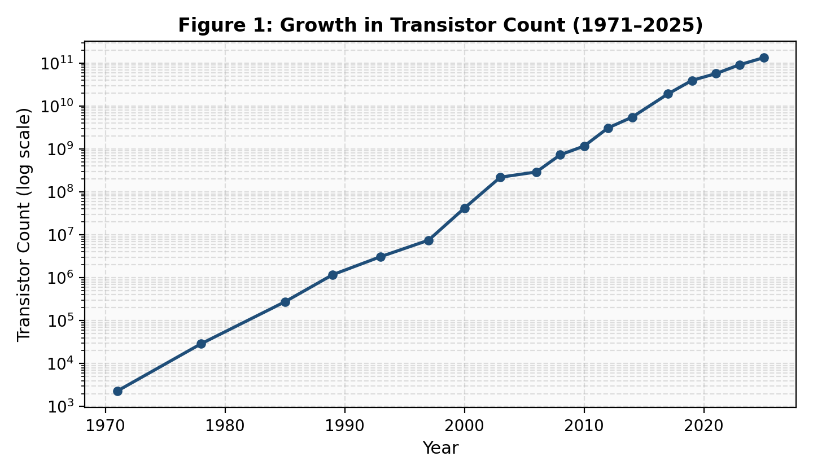
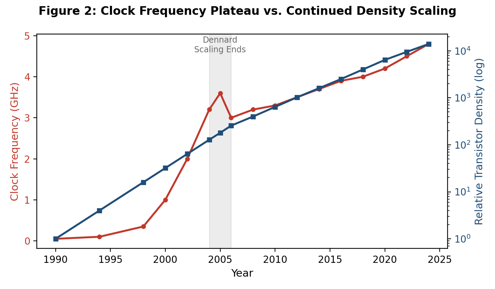
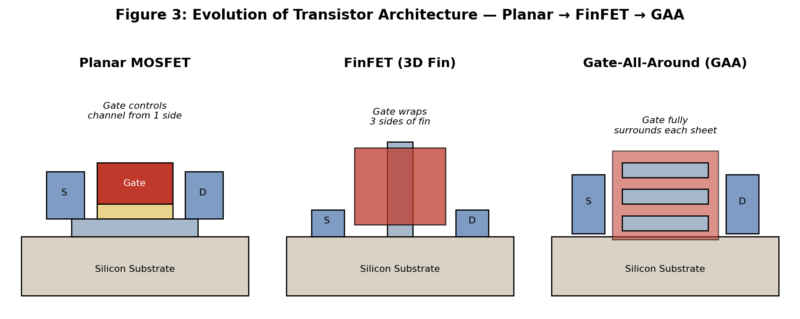

1. The Rule That Defined Computing
In 1965, Intel co-founder Gordon Moore made an observation that would come to define the entire trajectory of modern electronics: the number of transistors that could be economically packed onto an integrated circuit was doubling roughly every one to two years.
What began as an empirical curve-fit soon became an industry-wide mandate. Semiconductor companies, equipment vendors, and even national research agendas organized themselves around hitting the next node on schedule. Moore's Law was never a law of physics — it was a self-fulfilling roadmap, sustained by relentless investment in lithography, materials science, and process engineering.
For half a century this scaling rhythm delivered the exponential growth in compute performance that powered everything from personal computers to smartphones to today's data centers. But the physical and economic assumptions that made this doubling possible have eroded, and the semiconductor industry has had to reinvent how it delivers performance gains.

2. Why Smaller Transistors Changed Everything
Shrinking a transistor is not merely about fitting more of them on a die. Robert Dennard's 1974 scaling theory showed that if a transistor's dimensions, voltage, and doping concentration were all scaled down by the same factor, its power density would remain constant while its switching speed increased. This meant each new process generation delivered smaller, faster, and more power-efficient transistors simultaneously — a rare engineering trifecta.
This compounding benefit is why the industry could offer higher clock speeds, lower power consumption, and lower cost per transistor all at once, generation after generation. Architects could add more logic, more cache, and more parallelism without paying a proportional power or cost penalty. Dennard scaling, not Moore's Law alone, was the real engine behind decades of performance growth.
3. When Dennard Scaling Broke Down
By the mid-2000s, Dennard scaling had effectively stalled. As transistor channel lengths shrank below roughly 90–65 nanometers, supply voltage could no longer be reduced at the same pace without transistors leaking current even while switched off. Threshold voltage cannot be scaled indefinitely without sacrificing the on/off ratio that makes a transistor useful as a switch.
The result was that power density began to rise with each new node instead of staying flat. Clock frequencies, which had climbed from megahertz to multiple gigahertz through the 1990s, plateaued around 3–5 GHz and have stayed there ever since, even as transistor counts kept climbing. This divergence is the origin of the so-called 'power wall' and the shift toward multi-core processors, since simply cranking clock speed higher was no longer power-efficient.

The relationship can be captured in the classic dynamic power equation, which shows why voltage — not just frequency — dominates power consumption:
where P is dynamic power dissipation, C is switched capacitance, V is supply voltage, and f is clock frequency. Because power scales with the square of voltage, once V stopped shrinking, every further increase in frequency or density translated almost directly into higher power density — a cost the industry could no longer hide.
4. The Physical Limits of Shrinking
As feature sizes approached the atomic scale, new physical effects began to dominate device behavior. Quantum mechanical tunneling allows electrons to pass through gate oxides that are only a few atoms thick, causing leakage current even when a transistor is nominally off. Short-channel effects make it difficult for the gate to maintain full control over the channel once the channel length becomes comparable to the depletion region width, degrading the sharpness of the on/off switching behavior.
Variability also becomes a serious concern: at these dimensions, the exact placement of a handful of dopant atoms can measurably shift a transistor's threshold voltage, making manufacturing yield harder to guarantee. Heat removal compounds the challenge, since power that used to dissipate over a larger area must now be extracted from a much denser, hotter volume of silicon. These are not engineering inconveniences to be optimized away — they are consequences of operating close to fundamental physical limits.
5. From Planar MOSFETs to FinFETs and GAA
The industry's first major structural response to short-channel effects was to abandon the flat, planar transistor altogether. The FinFET, introduced commercially around the 22-nanometer node, raises the channel into a thin vertical 'fin' and wraps the gate around three of its four sides. This dramatically improves electrostatic control of the channel, suppressing leakage and enabling continued voltage scaling that planar devices could no longer support.
More recently, leading foundries have moved to gate-all-around (GAA) architectures, including nanosheet and nanowire transistors, where the gate fully encircles the channel on all sides. This offers even tighter electrostatic control than a FinFET and allows channel width to be tuned by stacking multiple sheets, giving designers a new lever for balancing performance and power that pure lithographic shrinkage no longer provides.

6. When Economics Becomes a Limitation
Even where further shrinking remains physically possible, it is increasingly uneconomical. Extreme ultraviolet (EUV) lithography systems needed to pattern sub-10-nanometer features cost well over 150 million dollars per machine, and leading-edge fabs now cost tens of billions of dollars to build. Mask sets for advanced nodes can run into tens of millions of dollars, putting a leading-edge chip design out of reach for all but the highest-volume products.
This has given rise to a well-known observation sometimes called 'Moore's Second Law,' or Rock's Law: the capital cost of building a semiconductor fabrication plant roughly doubles every four years. At some point, the cost per transistor stops falling even though the transistor count keeps rising, which erodes the original economic incentive that made aggressive node shrinkage worthwhile for a broad range of products.
7. Scaling Up Instead of Just Scaling Down: Chiplets & 3D Integration
Rather than continuing to chase ever-smaller monolithic dies, the industry has increasingly turned to packaging innovation as a new scaling axis. Chiplet architectures break a large processor into smaller functional dies — compute, I/O, memory controllers — manufactured on whichever process node suits each block best, then reassembled on a single package using high-density interconnects. This improves yield, since a defect on a small chiplet wastes far less silicon than a defect on one giant monolithic die, and it allows designers to mix process technologies within a single product.
3D integration takes this further by stacking dies vertically and connecting them with through-silicon vias (TSVs) or hybrid bonding, dramatically shortening the interconnect distance between logic and memory layers. AMD's 3D V-Cache, Intel's Foveros packaging, and high-bandwidth memory (HBM) stacks used in AI accelerators are all commercial examples of this 'scaling up and out' philosophy, which decouples system-level performance growth from transistor-level shrinkage.
8. The Interconnect and Memory Bottleneck
As transistors have shrunk, the wires connecting them have not kept pace. Interconnect resistance and capacitance scale unfavorably at smaller dimensions, so a growing share of a chip's delay and power budget is now spent moving data across the die rather than switching transistors. This is often summarized as the shift from a 'transistor-limited' to a 'wire-limited' design regime.
The gap between processor speed and memory bandwidth — the long-standing 'memory wall' — has become an even more acute bottleneck for data-intensive workloads. Techniques such as high-bandwidth memory, near-memory computing, and placing memory dies directly on top of compute dies via 3D stacking are all attempts to reduce the physical distance data must travel, since in modern systems, moving a bit of data can consume far more energy than computing on it.
9. How AI Is Changing Semiconductor Design
Artificial intelligence workloads have reshaped chip design priorities in two directions at once. First, AI has become a major consumer of silicon: training and running large models demands enormous parallel matrix-multiply throughput and memory bandwidth, driving specialized accelerator architectures — GPUs, TPUs, and custom NPUs — that would have been considered niche just a decade ago. Second, and less visibly, AI has become a tool within the design process itself. Machine learning is now used for chip floorplanning, standard-cell placement, and routing optimization, tasks that traditionally consumed months of engineer-hours.
Google's use of reinforcement learning to help floorplan sections of its TPU chips is a widely cited example of this shift. As designs grow more complex and process nodes offer diminishing intuitive returns, AI-assisted electronic design automation (EDA) is becoming a meaningful lever for compressing design cycles and finding non-obvious layout optimizations that human designers might not explore.
10. Beyond Moore's Law: What Comes Next?
The semiconductor roadmap has effectively split into several parallel tracks rather than a single shrinking curve. Continued device-level innovation — GAA transistors, complementary FET (CFET) structures that stack n-type and p-type devices vertically, and new channel materials such as 2D semiconductors — will keep pushing density modestly higher. At the same time, packaging-level integration through chiplets and 3D stacking is emerging as a comparably important lever for system performance.
Longer term, more exploratory paths include photonic interconnects to move data with light instead of electrons, neuromorphic architectures that borrow computational principles from biological neurons, and early-stage quantum computing for specific problem classes. None of these fully replace transistor scaling in the near term; instead, the industry appears headed toward a heterogeneous future where architecture, packaging, and materials innovation jointly deliver the performance gains that used to come from lithography alone. Moore's Law, in its literal transistor-counting form, may be slowing — but the underlying goal of exponential compute growth is very much still being pursued, just along more diverse engineering paths.
References
- G. E. Moore, "Cramming More Components onto Integrated Circuits," Electronics, vol. 38, no. 8, 1965.
- R. H. Dennard et al., "Design of Ion-Implanted MOSFET's with Very Small Physical Dimensions," IEEE Journal of Solid-State Circuits, 1974.
- International Roadmap for Devices and Systems (IRDS), IEEE, latest edition.
- Intel, TSMC, and Samsung public foundry technology disclosures on FinFET and GAA (nanosheet) process nodes.
- N. P. Jouppi et al., "In-Datacenter Performance Analysis of a Tensor Processing Unit," ISCA, 2017.
- J. M. Rabaey, A. Chandrakasan, B. Nikolic, Digital Integrated Circuits: A Design Perspective, Prentice Hall.